I am a Media Buyer and Performance Marketer with about four years of experience running Meta ads across e-commerce, real estate, roofing and other lead generation businesses. Beyond running the ads, I also build the landing pages, tracking and GoHighLevel automations that handle what happens after someone becomes a lead.
This is spend I personally managed inside the ad accounts, including campaign setup, budget allocation, testing, optimization and scaling. My largest lead generation budgets were around $20K monthly, while the DTC accounts I worked on reached $60K monthly.
I do not look at CPL or CPA alone when deciding whether a campaign is working. I look at the full journey from the creative to the landing page and eventually the sale. For creative performance, I review hook rate, hold rate, CTR and frequency. From there I look at landing page views and conversion rate, then follow add to carts, checkouts, purchases, CPA and profitability for e-commerce, or qualified leads, appointments and closed sales for lead generation.
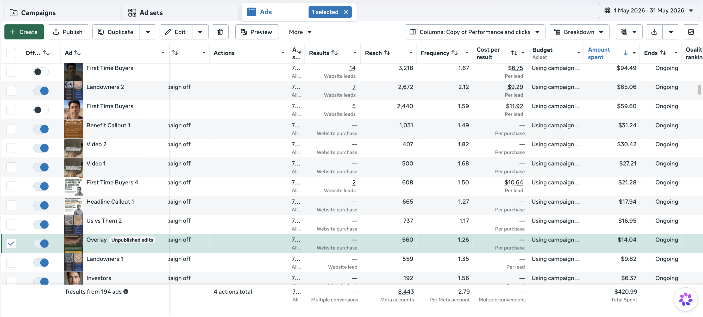
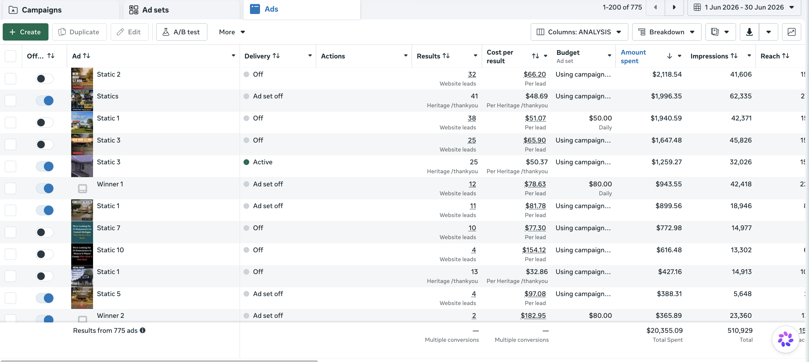
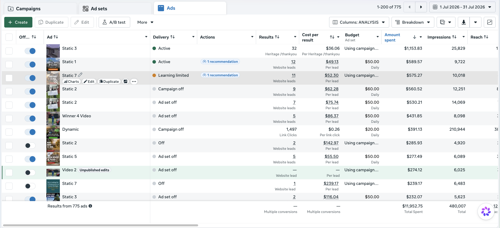
For most of my lead generation campaigns, I do not stop at generating the lead. I build the GoHighLevel automations that handle lead routing, tagging, SMS follow up, appointment booking and internal notifications. I also connect tracking back to Meta through Pixel and Conversion API so I can measure more than form submissions and understand which campaigns are producing qualified appointments and sales.
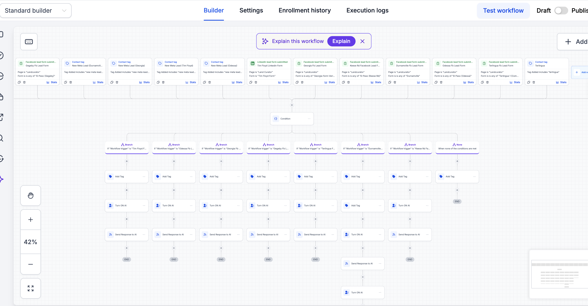
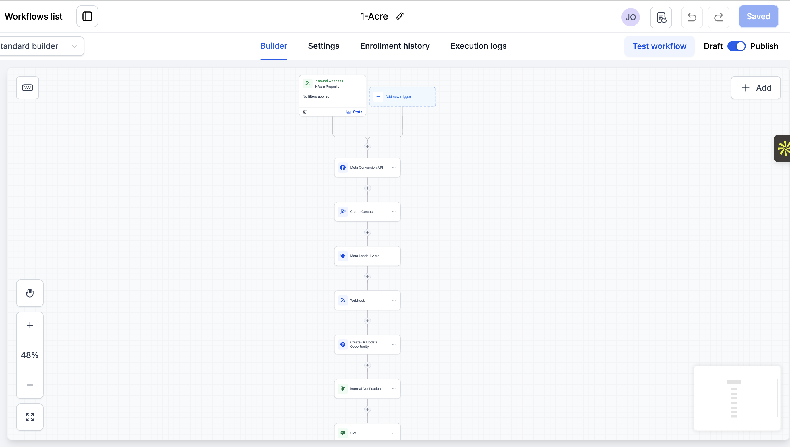
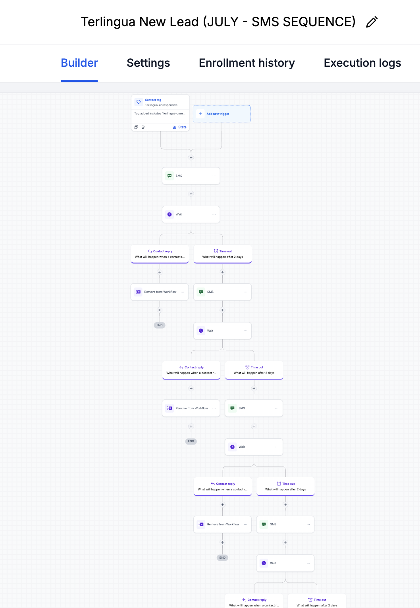
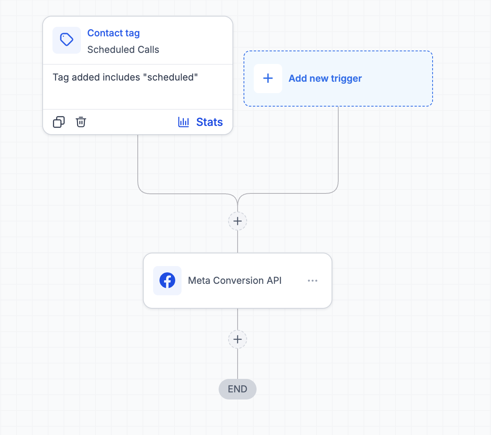
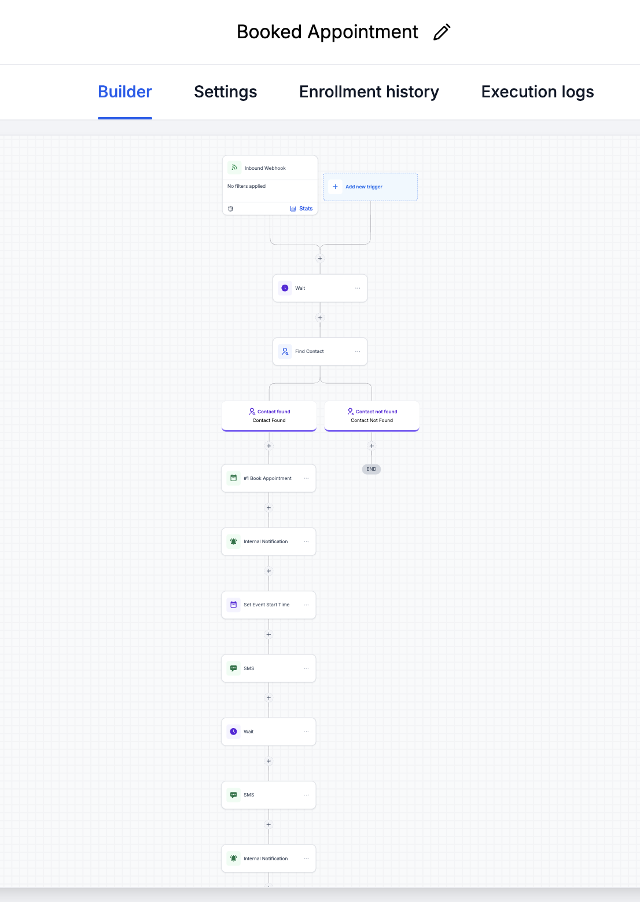
Run the ads, build the follow-up, ship the page it all lands on.
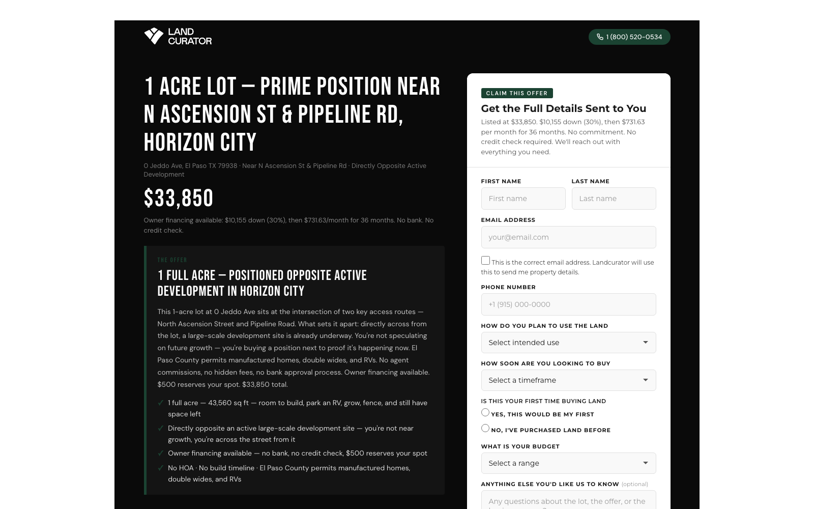
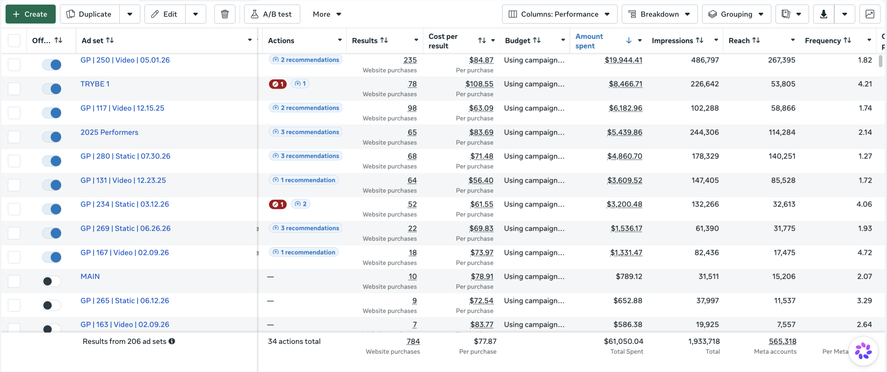
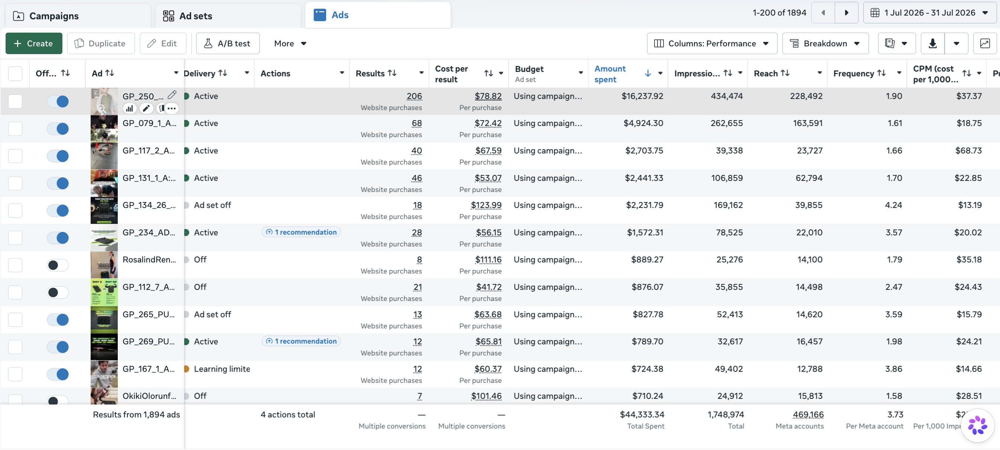
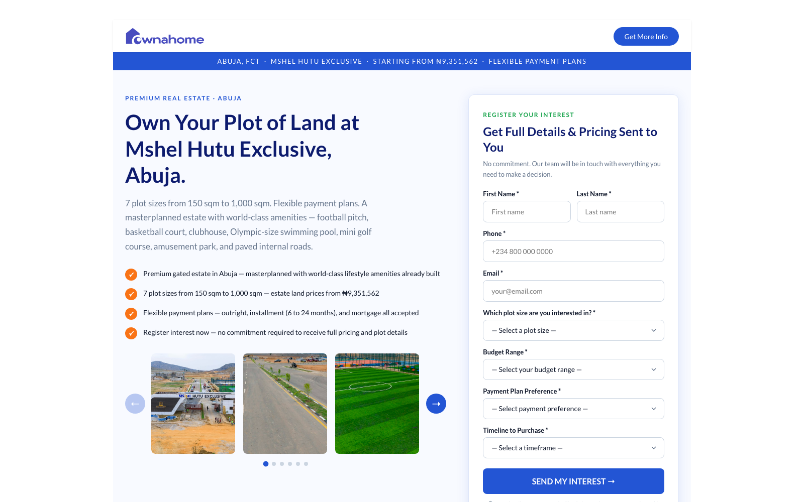
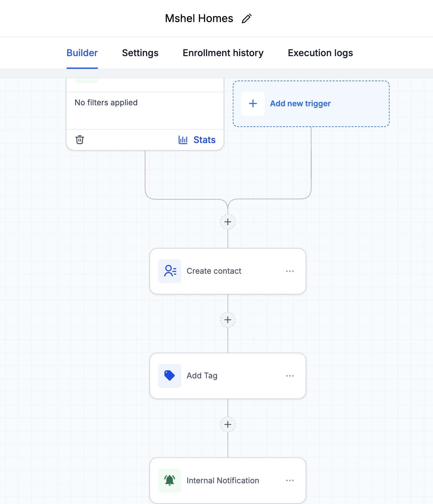
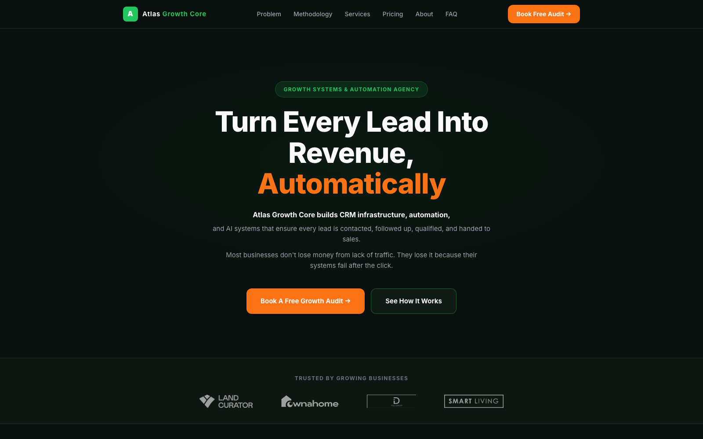
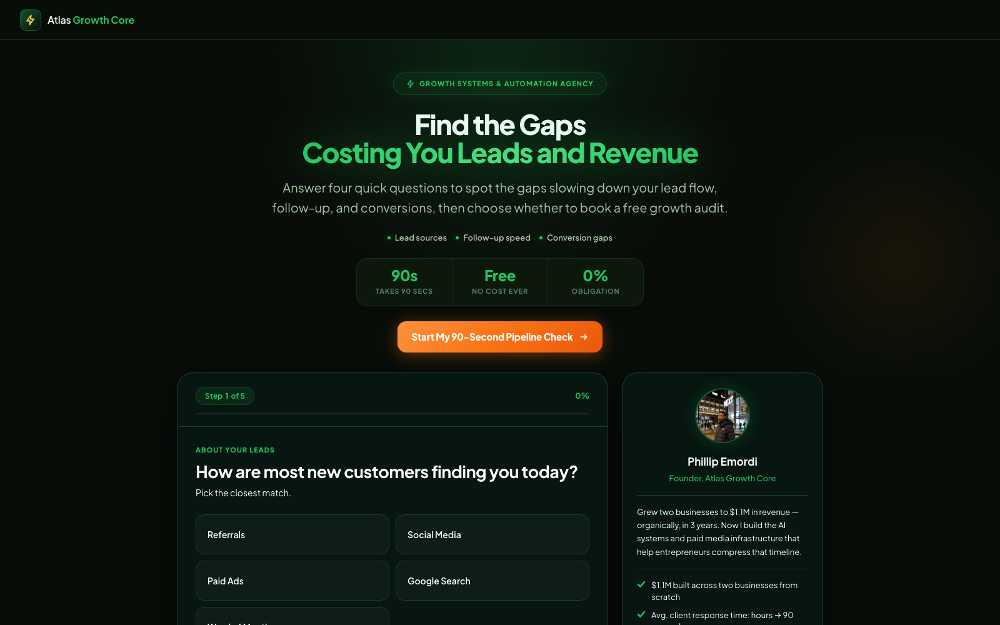
I have been working in paid advertising for about four years, with most of my experience on Meta across e-commerce and lead generation. I normally handle more than just the ad account. Depending on the client, that can include researching the audience, developing creative angles, building landing pages, setting up tracking and building the GoHighLevel automations behind the campaign.
When I am reviewing performance, I am trying to understand where the actual problem is. If people are not clicking, I look at the creative. If they are clicking but not converting, I look at the landing page. If we are generating leads but they are not becoming appointments or sales, I go into the CRM and look at lead quality and follow up. I care less about making one metric look good and more about whether the entire campaign is actually producing revenue.
Meta ads, GoHighLevel automation, or both, I'm open to new accounts.
Jakemar4831@gmail.com